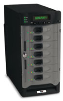

|
|||
|
|||
KEY
FEATURES |
 | ||
|
|||
| High-Capacity:
Over 2TB in 3U Rack Space! The Galaxy 12i supports massive capacity with 12 hot-swap drives integrated in a standard 19-inch rackmount enclosure. The Galaxy 12i supports all leading IDE drive OEMs, including Hitachi & Seagate. Supported RAID levels: 0, 1, (0+1), 3, or 5, the system allows one HDD failure with out impact on the existing data and failed drive rebuild is transparent to the host. Fault-tolerant Design System operation is constantly protected by redundant cooling fans and power supplies. System information is easily accessible via the control panel, RAID Guide Manager, or VT100 terminal emulation. UL/CE Approved The Galaxy 12i, although low-cost is designed for high-end applications and professional data center configurations. |
|||
|
|||
Features: - High drive packing density (16 drives in 3U/5.25") - Supports FC-AL 2 at 1 Gb or 2Gb/s - Drive cooling provided by 4 Centrifugal blowers - FCC class A, UL, cUL, and CE mark - Dual PSUs with Power Factor Correction 7 autoranging - -48VDC PSU option for Telco applications - No active data path components on the midplane - Operator panel with Enclosure ID selection, status indicators and configuration switches - Backward compatible with 1Gb FC networks - Single or split bus I/O adds versatility - Backplane configuations allow 2 stations to connect to 16 drives or 4 stations to connect to 2 groups of 8 drives - Fault Indicators and audible alarm for power, cooling, system faults, loop speed and hub configuration - Suitable for standard 19" rack or Telco style center of gravity mounting - Deskside Tower options available - All components hot swap, concurrently maintainable for maximum availability - Dual redundant feature select module |
|||
|
|||
| This
innovative storage system offers 580 Gigabytes in just 2U of 19 inch rack
space (based on 8 x 73GB low profile drives). The MaxArray U320 offers excellent
price performance in a small form factor package. This new generation of
chassis provides exceptional cooling, rotational vibration and acoustic
performance characteristics. The enclosure is easily mounted in standard
19 inch racks. The storage solution can operate in the most difficult operating environments in the world. The system is one of the first in its class to provide a fully redundant cooling system capable of withstanding temperatures of up to 50ºC (with optional 2nd cooling module installed) or up to 40ºC in the standard configuration. The MaxArray U320 offers a fully redundant and highly flexible architecture with the option to setup 1 channel of 8 drives or 2 channels of 4 drives per bus. The front-end design is easily customized allowing OEM’s to provide a unique appearance for their solutions. |
|||
Features Product Code: MaxArray U320 Number of U160/320 drives: 8 Per enclosure External interface: VHDCI connectors Device types supported: Up to 15,000 rpm, Ultra 2-U320 LVD SCSI Chassis & drive carrier material: combination of Zintec sheet metal, injection molded plastics and metal castings. Hot pluggable components: PSU, cooling module, disk drives and I/O Modules. U320 SCSI compliant |
|||